Define executable contracts
Typed schemas, policy checks, and tool registries bind proposed work to permitted actions and runtime limits.
Engineering
Typed interfaces, durable execution, and reproducible tests connect model-driven decisions to dependable software.
Practice
Typed schemas, policy checks, and tool registries bind proposed work to permitted actions and runtime limits.
Record intent before dispatch, reuse confirmed results, and halt when external effects remain uncertain.
Test document replacement, storage ownership, and recovery at process-termination boundaries.
Retain source revisions, controlled inputs, validation commands, and acceptance evidence alongside the implementation.
Technology

Python and the Python Logo are trademarks of the Python Software Foundation. Git and the Git logo are trademarks of Software Freedom Conservancy, Inc. Other marks belong to their respective owners.